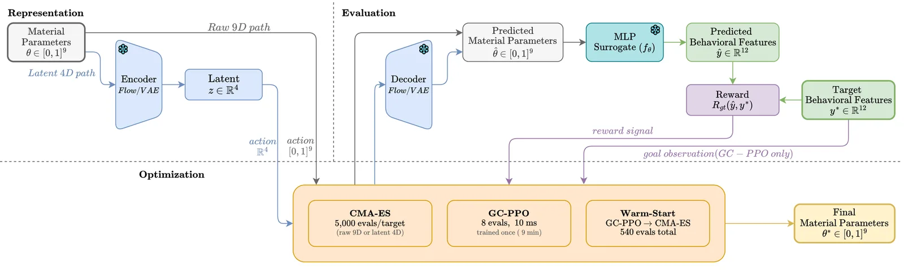
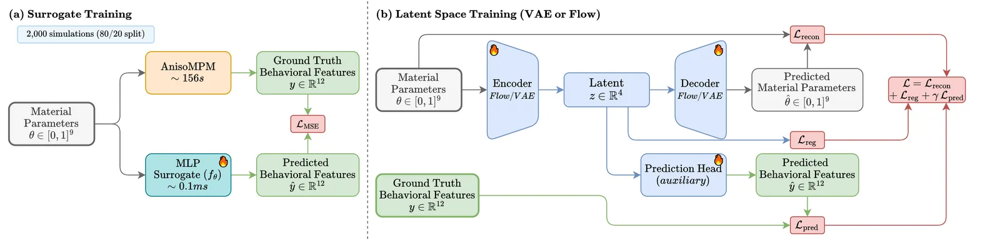
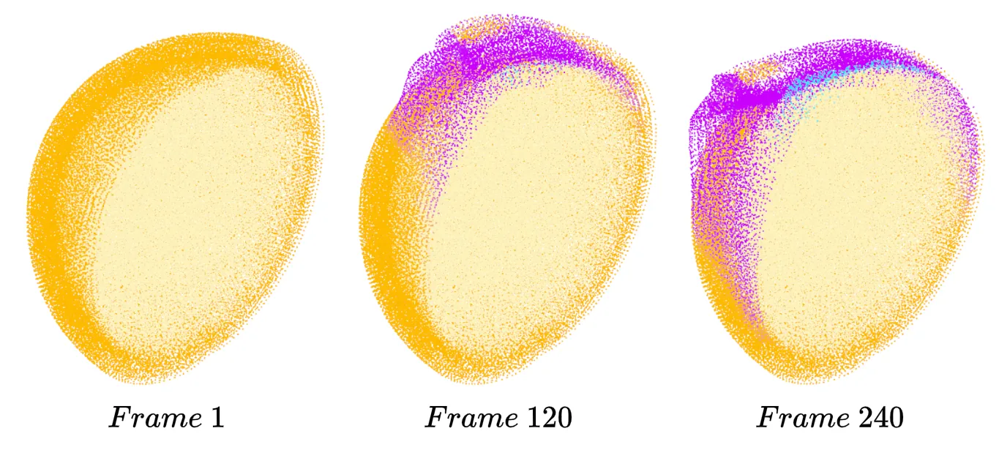
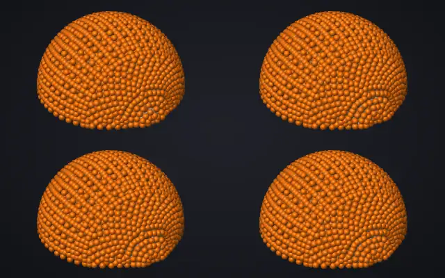
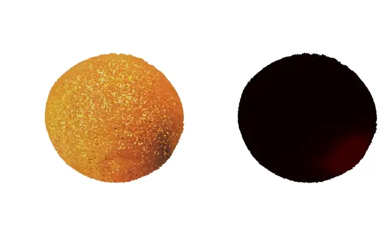

Realistic visual simulation of food manipulation requires accurate material parameters, yet these are difficult to measure directly and vary across the heterogeneous regions of a single food item. We address the inverse problem of estimating material parameters from a target description of fracture behavior in a non-differentiable continuum damage mechanics simulator. Using orange peeling as a test case, we train a neural surrogate on 2,000 forward simulations and compare Covariance Matrix Adaptation Evolution Strategy (CMA-ES, a gradient-free evolutionary optimizer) with Proximal Policy Optimization (PPO, a reinforcement learning algorithm) across the original 9-dimensional parameter space and two learned 4-dimensional latent representations. Since different oranges have different material properties, a practical inverse system must handle arbitrary targets without retraining. We train a goal-conditioned PPO policy that learns a general inverse mapping: given any target description of peeling behavior, the policy produces a material parameter estimate in a single forward pass (8 surrogate evaluations, approximately 10 ms). Operating in a normalizing flow latent space with a shared surrogate evaluator, the goal-conditioned policy achieves 0.642 actual recovery when validated through the simulator, outperforming the original parameter space by 23%. A warm-start extension that initializes CMA-ES refinement from the policy's output further improves recovery to 0.828 with 540 evaluations. These findings provide a practical framework for inverse food physics and lay groundwork for vision-driven material identification from video observations of food manipulation.

At inference the encoder, decoder and surrogate are frozen. Parameters are optimized directly or as a 4-D latent code. CMA-ES searches per target, goal-conditioned PPO takes the target features as its goal and generalizes across targets, and the warm start combines both. Every proposal is decoded to parameters and scored by the same MLP surrogate.
The simulator is AnisoMPM, a material point method with continuum damage mechanics and anisotropic fibre reinforcement. Its fracture mechanics are not differentiable, and one run takes about 156 s, so gradient-based inversion is ruled out and search in the simulator is slow. A neural surrogate trained on 2,000 simulations predicts behavioural features of the peel from the 9 material parameters, about 1.5 × 10⁶ times faster than the simulator.
A VAE or a normalizing flow compresses the 9 parameters to a 4-D latent code. A goal-conditioned PPO policy observes the target features as its goal and refines a latent code over 8 steps, so one trained policy serves any target. Every method, including CMA-ES in each space, is scored by the same surrogate after decoding back to parameters, and every final estimate is validated in the simulator.

Offline training. (a) The MLP surrogate learns to predict behavioural features from material parameters. (b) The VAE or flow compresses the 9-D parameter space to 4-D with parameter reconstruction, latent regularization and feature prediction losses, so that nearby codes produce similar peels.

AnisoMPM simulation of orange peeling at three stages. Particles are coloured by region and damage: orange for intact skin, yellow for intact flesh, purple for damaged skin, cyan for damaged flesh.

Four of the 2,000 training simulations, played in sync. Only the 9 material parameters differ. They are ordered by skin detachment fraction, one of the 12 behavioural features, from least (top left) to most (bottom right). Particles are coloured by starting depth (rind, pith, flesh), and the gripper that pulls the skin is not drawn.
On 10 held-out targets, the goal-conditioned policy in the flow latent space reaches 0.642 recovery with 8 evaluations per target: 82% of CMA-ES in the raw parameter space (0.781), which needs 5,000 evaluations per target, and 23% above the same policy in the raw 9-D space (0.523). Starting CMA-ES from the policy's estimate (warm start, 540 evaluations) reaches up to 0.828. Searching harder against an imperfect surrogate does not always help: CMA-ES with 5,000 evaluations scored slightly below CMA-ES with 540 (0.781 against 0.788).
Recovery and cost per target
Each point is one method on the 10 held-out targets, validated in the simulator. The four points at 540 evaluations are spread sideways so they do not overlap. The tables below list every value.
Inverse recovery on 10 held-out targets
| Method | Evals | Surrogate | Simulator | Gap |
|---|---|---|---|---|
| Searched per target | ||||
| CMA-ES, raw space | 5,000 | 0.922 | 0.781 | 0.141 |
| CMA-ES, flow latent | 5,000 | 0.878 | 0.552 | 0.327 |
| CMA-ES, VAE latent | 5,000 | 0.498 | 0.028 | 0.470 |
| One policy for all targets | ||||
| GC-PPO, raw space | 8 | 0.531 | 0.523 | 0.008 |
| GC-PPO, flow latent | 8 | 0.654 | 0.642 | 0.012 |
| GC-PPO, VAE latent | 8 | 0.510 | 0.485 | 0.025 |
Warm start against CMA-ES
| Method | Evals | Surrogate | Simulator | Gap |
|---|---|---|---|---|
| Warm start, raw space | 540 | 0.874 | 0.808 | 0.065 |
| Warm start, flow latent | 540 | 0.867 | 0.773 | 0.095 |
| Warm start, VAE latent | 540 | 0.862 | 0.828 | 0.034 |
| CMA-ES, raw space | 540 | 0.867 | 0.788 | 0.079 |
| CMA-ES, raw space | 5,000 | 0.922 | 0.781 | 0.141 |
"Surrogate" is the recovery the surrogate predicts; "Simulator" is the recovery after running the estimate in AnisoMPM; the gap between them grows with how hard a method searches the surrogate.
The paper uses a simulated orange. As a first step toward the vision-driven setting it points to, an orange reconstructed with 3D Gaussian Splatting is peeled in AnisoMPM. The orange is a FruitNinja model (Wu and Chen, CVPR 2025). This is not part of the paper and has no quantitative evaluation.

Left: the reconstructed orange, drawn as its Gaussian centres in their own colours. Right: how far each point has moved, normalized per frame (dark: at rest, bright: moving with the peel). Both are point-splat renders, not full Gaussian Splatting rasterization.
The method is tested on one case, orange peeling with AnisoMPM, so other foods and fracture modes are untested. The 10 held-out targets vary a lot from target to target (standard deviation 0.084 to 0.162), which limits comparisons between methods with similar means. The 9-dimensional parameter space is small next to the spatially varying material fields of real food, and the warm-start advantage over CMA-ES with the same budget is not consistent across representations.
@InProceedings{ramlal2026latent,
author = {Ramlal, Adrian and Chen, Yuhao and Zelek, John S.},
title = {Latent Space Reinforcement Learning for Inverse Material Estimation in Food Fracture Simulation},
booktitle = {Proceedings of the IEEE/CVF Conference on Computer Vision and Pattern Recognition (CVPR) Workshops},
month = {June},
year = {2026},
pages = {9573-9581}
}